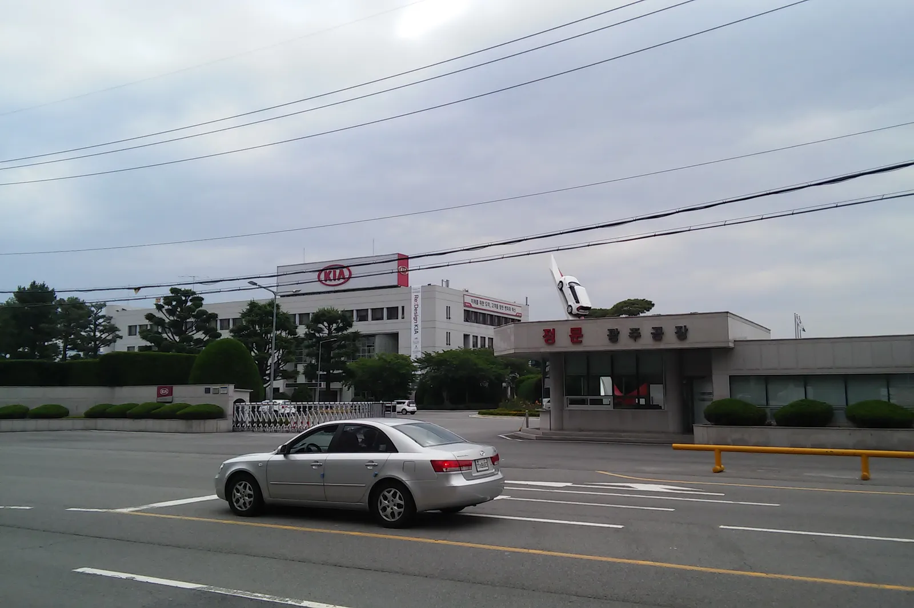
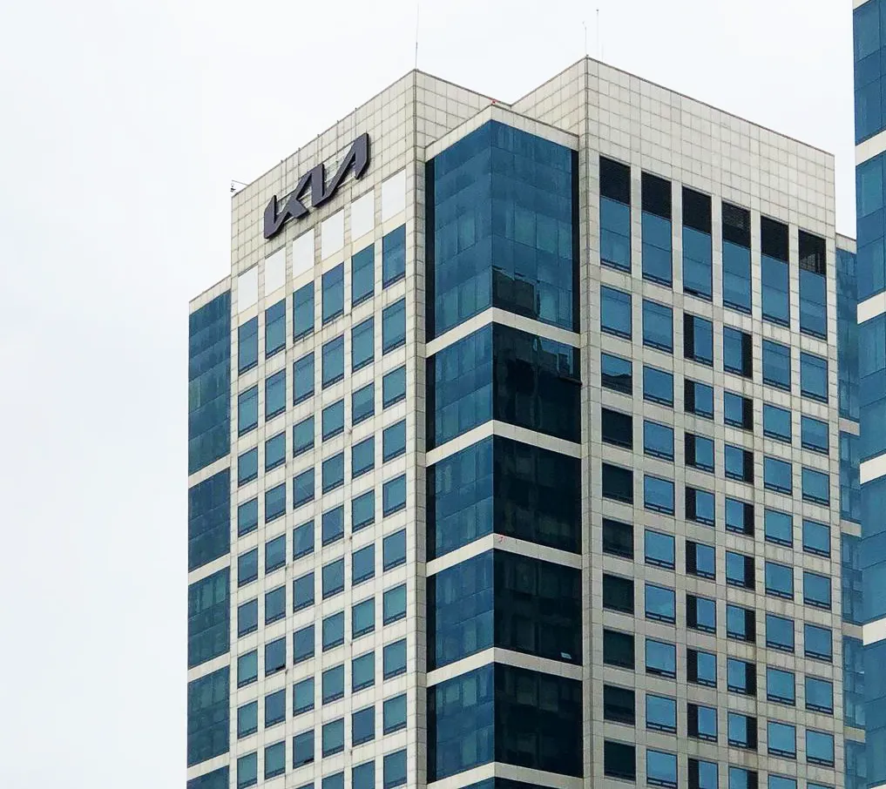

▲ 8월 국산차 5개사 합산 판매는 7만9,739대로 전월보다 2만8,058대 줄었다 ⓒ Wikimedia Commons
한 달 만에 2만8천 대가 사라졌다. 국산차 5개사(현대차·기아·KGM·GM한국사업장·르노코리아) 합산 내수 판매가 7월 대비 26.0% 줄어든 7만9,739대에 그쳤다. 계절적 비수기라는 말로 설명하기엔 낙폭이 크다.
이미 여러 매체가 "8월 기아가 현대차를 다시 앞질렀다"는 순위 이슈를 다뤘다. 하지만 순위 뒤집기보다 눈여겨봐야 할 건 업계 전체가 왜 이렇게 통째로 꺾였는가다. 오토트리뷴 보도와 각사 공시를 토대로 8월 국산차 시장 전체의 급감 원인을 짚었다.
1. 숫자로 보는 8월 — 얼마나, 어디서 줄었나
감소분의 대부분은 현대차·기아 두 회사에서 나왔다. 오토트리뷴에 따르면 8월 국산차 TOP 10 모델 합산 판매만 놓고 봐도 5만3,442대에서 4만459대로 24.3% 줄었다. 특정 모델 한둘의 문제가 아니라 라인업 전반이 동시에 가라앉은 모양새다.
| 구분 | 7월→8월 감소량 | 감소율 |
|---|---|---|
| 국산차 합산(5개사) | 2만8,058대 | 26.0% |
| 현대차 | 1만2,870대 | 30.2% |
| 기아 | 1만4,239대 | 26.1% |
| 국산차 TOP 10 모델 합산 | 1만2,983대 | 24.3% |
다른 카프리즘 기사에서 이미 다룬 것처럼, 이 여파로 8월 기아(4만213대)가 현대차(3만4,333대)를 다시 앞서는 순위 역전이 나타났다. 하지만 이 기사에서 짚을 부분은 순위가 아니라 업계 전체 파이 자체가 줄었다는 사실이다. 기아가 현대차보다 상대적으로 덜 흔들렸을 뿐, 기아 역시 전월 대비 4분의 1 이상 감소했다.
▲ 현대차그룹 사옥. 8월 현대차의 내수 판매는 전월 대비 30.2% 줄었다 ⓒ Wikimedia Commons
2. 1차 원인 — 현대차 전면파업과 근무일수 축소
가장 직접적인 원인은 공급 차질이다. 현대차는 8월 21일 전면파업에 들어갔고, 여기에 8월 초 여름휴가와 설비점검 기간까지 겹치며 실질 근무일수 자체가 줄었다. 공장이 멈추거나 가동률이 떨어지면 그만큼 출고가 밀리고, 밀린 물량은 월간 실적에 고스란히 반영된다.
이는 수요가 사라진 게 아니라 공급이 막혀 발생한 감소라는 점에서, 9월 이후 밀린 출고 물량이 회복되며 반등할 여지가 있다는 뜻이기도 하다. 실제로 카프리즘이 별도로 다룬 8월 순위 역전 기사에서도 "9월 이후 순위가 다시 뒤집힐 여지가 있다"는 분석이 나온 바 있다.
📍 공급 차질 vs 수요 위축, 왜 구분해야 하나
같은 '판매 감소'라도 원인이 공급(생산 차질)인지 수요(구매 심리 위축)인지에 따라 이후 그래프 모양이 완전히 달라진다. 공급 차질형 감소는 밀린 물량이 다음 달 출고로 이어지며 단기 반등하는 경우가 많고, 수요 위축형 감소는 회복까지 시간이 걸린다. 8월 국산차 감소는 파업·휴가철 근무일수 축소라는 공급 요인이 크게 작용한 사례로 분석된다.
3. 2차 원인 — 7월의 '기저효과', 셀토스가 대표적
7월 실적 자체가 유독 높았다는 점도 8월 낙폭을 키웠다. 7월에는 셀토스 상품성 개선 모델과 EV5 등 신차·부분변경 모델의 초기 물량이 한꺼번에 풀리며 판매가 몰렸다. 오토트리뷴에 따르면 셀토스는 7월 7,427대에서 8월 3,307대로 반토막 났다.
신차 출시 직후에는 대기 수요가 한 번에 소진되며 첫 달 판매가 비정상적으로 높게 찍히는 경우가 흔하다. 그 반작용으로 다음 달 수치가 상대적으로 초라해 보이는 기저효과가 8월 통계에 함께 반영된 셈이다.
▲ 기아 셀토스. 7월 7,427대에서 8월 3,307대로 판매가 급감하며 기저효과의 대표 사례로 꼽혔다 ⓒ Wikimedia Commons
4. 3차 원인 — 수입 전기차가 흡수한 몫
공급·기저효과만으로 설명되지 않는 부분도 있다. 오토트리뷴은 테슬라 모델Y 등 수입 전기차 판매 증가가 국산차 수요 일부를 흡수했다고 짚었다. 국산 준중형 이하 세그먼트에서 가격 경쟁력을 앞세운 수입 전기차가 조금씩 파이를 넓혀가는 흐름과 맞물린다.
국내 완성차 5개사가 전동화 라인업을 확장하고 있는 것과 별개로, 특정 구간에서는 이미 수입 전기차와의 직접 경쟁이 통계에 잡히기 시작했다는 신호로 볼 수 있다.
✅ 8월 통계를 읽을 때 헷갈리기 쉬운 점
· 기아가 현대차를 앞선 건 기아가 잘 팔았다기보다 현대차가 더 크게 흔들렸기 때문이라는 해석이 우세하다
· 2만8,058대 감소는 전월 대비(MoM) 수치로, 전년동월 대비(YoY) 감소율과는 별개 지표다
· 파업·휴가철 요인은 일시적 공급 충격에 가까워 9월 반등 가능성이 열려 있다
5. 9월 이후, 무엇을 지켜봐야 하나
관건은 9월 출고 실적이다. 8월에 밀린 물량이 정상적으로 출고된다면 국산차 합산 판매는 다시 반등할 가능성이 크다. 반대로 현대차 노사 관계가 다시 불안해지거나 추가 파업이 발생하면 공급 차질이 장기화될 수 있다.
또한 셀토스처럼 신차 출시 초기 반짝 효과에 기댄 모델이 이후 몇 달간 어떤 판매 곡선을 그리는지도 관전 포인트다. 정확한 8월 공식 통계는 한국자동차모빌리티산업협회(KAMA) 발표를 통해서도 확인할 수 있다.
8월 국산차 판매 상세 데이터는 오토트리뷴 원문에서 확인할 수 있다. 오토트리뷴 원문 바로가기

▲ 기아 사옥. 8월 기아의 내수 판매도 전월 대비 26.1% 줄었지만 현대차보다는 낙폭이 작았다 ⓒ Wikimedia Commons
6. 요약
2026년 8월 국산차 5개사 합산 내수 판매는 7만9,739대로 전월 대비 2만8,058대(26.0%) 줄었다. 현대차가 1만2,870대, 기아가 1만4,239대 감소하며 감소분의 대부분을 차지했다.
원인은 크게 세 가지로 요약된다. 현대차 8월 21일 전면파업과 여름휴가·설비점검에 따른 근무일수 축소라는 공급 요인, 7월 셀토스·EV5 등 신차 초기 출고 집중에 따른 기저효과, 그리고 테슬라 모델Y 등 수입 전기차의 수요 흡수다.
이 중 파업·휴가철 요인은 일시적 공급 충격에 가까워 9월 출고 실적이 반등의 관건으로 꼽힌다. 정확한 회복 여부는 다음 달 KAMA 공식 통계로 확인될 전망이다.